Long ago in prehistoric times our hunter-gatherer ancestors lived a much more leisurely life than we do today. Populations were small and scattered, and the Earth provided amply, most of the time.
Table manners and table settings were not yet invented, because tables hadn't yet been invented, and Emily Post was an annoyance yet far in the misty future.
Food was eaten raw until the taming of fire, which allowed meat to be (a little) more tender and many formerly inedible or toxic vegetables to be made safe and nutritious. This is now known to have occurred in a pre-human population, and the improvement in nutrition is considered to have been critical to development of more powerful brains of humans.
Eating was done at the fire, where food was cooked in the embers or on hot rocks - there were no cooking vessels and plates were either a large leaf or a shard of bark, depending on climate. If you had in hand a large tough piece of meat, you could just bite down on it and cut it off with a flint knife (flint knives are extremely sharp).
Boiling also became common. How do you boil stuff when you have no pots? You dig out a log like a canoe. You pour in your water and ingredients (often roots). Then you drop in red hot rocks from the fire. Examples of these logs have been found in Ireland. Modern replication of paleolithic art from Altamira Cave considered to be in the Public Domain.
In this environment, life was pretty leisurely with plenty of time for social interaction and music making. Today, even the last remaining hunter-gatherer societies, though forced into some of the least productive regions of the Earth, have a lot more free time than we do - so what went wrong?
Permanent agricultural settlements were established. An increasing number of archaeologists, basing their opinion on recent finds and chemical analysis, believe the major reason for establishing these settlements was for reliable production of beer and wine. Over-ripe berries and week-old gruel were simply no longer sufficient to meet the social and religious needs of an increasingly jaded populace. Breweries, wineries, nightclubs and oracular cult centers were established all over the world.
With these settlements came division of labor, and with division of labor came division of wealth and social station. Tables were invented, and with them often absurdly elaborate orders of service and table manners - to make it impossible for those not born into wealth and station to pass as if they had been. If you weren't born and raised in the structure you'd make sufficient blunders to be found out and cast back out into the slave pool.
The West
Greco - Roman Times:
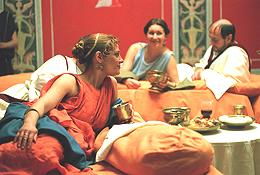 Little is recorded about food and/or dining in ancient Greece, except for Sparta, where the main (only) course was usually "black broth". The only seasoning applied was hunger. We know from visitor's complaints about the food of Sparta that things were much better elsewhere. Unfortunately the Greeks preferred to write about philosophy, war and classical drama rather than dining.
The Romans wrote quite a bit about food and dining, In most things they closely followed Greek practice, considered the height of civilization, so we can do some extrapolation backwards.
One thing is certain, the Romans learned of their most important sauce and condiment, Fish Sauce, from the Greeks. Whether this was carried to Greece from Thailand or to Thailand from Greece is irrelevant. It is such a natural result of salting fish that independent invention is just as probable. Fish sauce remains as important in Thailand and Vietnam today as it was during the Roman Empire.
Roman cooking more resembled Chinese than it did the European cooking of later times. In wealthy houses, meals were taken in a dining room called a triclinium, reclining diagonally on three wide couches of sufficient size to accommodate three diners per couch. The couches partially surrounded small low tables which were continuously replenished by slaves. The Romans picked up this style from the Etruscans, who had picked it up from the Greek colonies in Italy. Photo from Museo de historia de Valencia, contributed to the Public Domain.
Roman dining differed radically from the Greek in that women dined with the men rather than being exiled to a rude family room somewhere else. The Romans adopted all aspects of Greek culture except "Greek culture". Rude joke: "Sex was discovered by the Ancient Greeks. It was the Romans who introduced it to women". Common people and pub patrons ate sitting on benches at low tables.
Utensils used were spoons, forks, fingers and bread. Forks were mainly two pronged with some three prong examples and were straighter than modern forks. The extent to which they were used is currently a matter of debate. At the fall of the Empire the fork disappeared from Western Europe, but remained in use in Byzantium and as far east as Persia. From Byzantium it found it's way back to Italy around the year 1000 and finally worked its way back to England in the 1700s.
The "Dark Ages"
Not a lot is known about daily life and dining during this turbulent time (4th to 10th centuries). The early Christian Church strongly promoted the concept that Christians were ignorant, illiterate and unwashed to prove they were "not worldly", an attitude that hung around even into the 15th century. Libraries of the ancient world were burned (any that survived the Christians were burned by the Muslims) and education was not encouraged. Illustration copyright expired.
While there were a few pockets of literacy, mostly local and short lived, they were confined to the clergy. Not much was written about daily life to inform future generations, of which there weren't supposed to be many. The Rapture was expected "any day now", though a few monks in France placed it at the year 1000.
Roman sewer systems (at least one of which has been cleaned out and restored to service in recent times) and the Roman baths were filled in with rubble and trash to enforce the concept of unworldly filth.
You can be pretty sure table service and manners fell into similar disrepair, but changes were afoot. With the rise of powerful kings and nobilities, and embrace of luxurious living by the Church hierarchy, worldliness began to rise from the rubble.
Medieval Times:
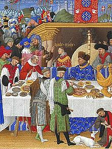 Following the year 1000, Europe, still un-Raptured, began to enjoy greater stability and sophistication. In the noble households of Europe, meals were served in a communal "great hall" where all persons of significant rank were required to eat their meals. If you had no significant social rank you were outside hoping for leftovers. Illustration copyright expired.
Usually there was a long trestle where people were seated strictly according to their social rank. There would be a higher table at the head end, "crossing the T", for the host, some family members and important guests. A salt cellar (a bowl of salt) was placed at an appropriate point along the long trestle. The lower social ranks were seated "below the salt" and the higher ranks closer to the "high table".
No food was passed. You could eat only that which was within your reach, which would be whatever was thought suitable to your social status. There was, of course, a very strict protocol for what dishes were served when and which were taken away when and where on the table they were placed and taken from.
There would be continuous music and skits for entertainment of the diners, and copious singing in which the diners were expected not only to participate, but to know all the songs and the words for them.
This was a time of extreme regulation - so many rules and so much regulation even the most ardent Washington regulator would be stunned into worshipful silence. Every aspect of life and commerce was laid down by decree, including who could do what, where they could do it (within a few yards at most) and exactly how they had to do it.
Rules of table service were laid out in incredible detail with special names for every move you could make with every type of dish. Nobility was served not by servants but by lesser nobles, educated from birth in all the rules, regulations and special lingo. There was simply no way to break into this society except to be born into it - that's the whole point.
Almost every book and article that touches on the Medieval period assures us of two things. (1) Spices were applied with a heavy hand to cover the taste and smell of spoiled meat. (2) A huge number of dishes were served at table and gluttony was the order of the day. Both of these scenarios are highly unlikely.
Spices were delivered to Europe from what is now India and Indonesia, by very wealthy monopolies. They were incredibly expensive.
We have plenty of surviving instructions to servants for the daily purchase of foods, and the extremely tight commerce regulations and severe punishments for any vendor violating those regulations. It is highly unlikely those who could actually afford spices at all were eating spoiled meat. That just doesn't jive with economic and regulatory realities.
Unfortunately, recipes from the time list a lot of spices but give no quantities. Some argue that spices were applied in interesting blends but in modest amounts by "trained from birth" professional cooks, preparing meals for sophisticated nobles. Records of commerce do not support this view. Dividing the volume of spices imported by the number of those who could actually afford them indicates a rather heavy hand. Recipes didn't give quantities, because those were governed by the wealth of the host. Spices were a display of wealth - the more the better to impress.
As for gluttony, there would be many elaborate dishes on the tables, but diners could only eat from those within reach, which would be the dishes seen fitting to their social standing. They were probably taken in moderation - again, rules of etiquette.
There would be a great deal left over. This would first be enjoyed by the staff and servants, and that remaining would either become basic ingredients for the next meal, or be sent out to feed the poor. Food was eaten not from plates but from large slices of bread called "trenchers". These would sop up a lot of the elaborate sauces, and these too were sent out to the poor - nothing went to waste. This system is still used in many wealthy households in North Africa.
Table utensils were brought by the diner and consisted of a spoon and one or two knives, forks being unknown in most of Europe. Among the upper crust, one knife was used to cut food and another to bring it to the mouth. Most food was eaten with the fingers, and, of course, there were very strict rules of etiquette for exactly how this was done.
But despite all the rules and regulations, things began to change. To the horror of conservatives, by the 1300s couples had started taking their meals privately in their own quarters, rather than communally in the great hall. Many treatises were written in outrage at this practice - but it spread, and greater outrage was to come.
Between the 11th and 14th centuries the fork appeared, first in Italy, then France and beyond. It spread slowly, the Church denouncing it wherever it appeared as an "affront to God". God had, after all, provided fingers for the purpose. The Devil began to be pictured holding a fork, as he is to this day. The fork was not common in England until the 18th century.
The Medieval tradition of lavish banquets and entertainment eventually proved the downfall of the nobility during the Renaissance. Monarchs, intent on consolidating power, wanted to prevent armies being raised against them. They went on tours of their domain, with a large entourage, visiting any noble house thought troublesome. They overstayed their visit until the head of household was nearly bankrupt from providing the expected food and entertainment. When there was nothing left for raising armies or other trouble making, the monarch moved on to the next estate. This was particularly the case in England and France. Unfortunately, it was not done in Poland, resulting in the fall of the Polish Lithuanian Commonwealth.
The Renaissance
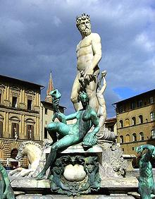 The years between the 14th and 17th century was an era of vast social and philosophical evolution. Increasing demand for luxury and ostentation by the nobility and church hierarchy had engendered powerful craft guilds and a new and increasingly powerful middle class. Photo by Davide Taviani distributed under license Creative Commons Attribution-ShareAlike 2.0 Generic..
Formerly these merchants, brokers and craftsmen were held in low esteem by the nobility, existing only to serve their desires - but increasingly they now served their own desires, and moved to rein in the excesses of the nobility.
Humanism was on the rise, and remaining works of Greek and Roman art, architecture and literature, including some culinary works, were studied and discussed intensely. Europe began taking on a whole new appearance. Noble houses began to decline, slowly at first, then faster, pressured by the middle class from below and the ambition of kings from above.
This was also an era of exploration and commerce. European sailing ship technology became so sophisticated the entire world was now available for commerce and conquest.
The old spice trade monopolies were broken, with European monopolies taking their place, to be broken in turn. The cost of spices had begun it's precipitous decline. As they became affordable, their use in European cuisine plummeted - they were no longer an ostentatious display of wealth.
Food became much more diverse as new edibles were introduced from the New World: turkeys, potatoes, tomatoes, chilis, squash, chocolate; and from Asia: eggplants, oranges, lemons. Some took a while to be accepted because they were obviously relatives of the deadly nightshade, but European cuisines without them are unimaginable today.
During the Renaissance the use of forks continued to spread, from Italy into France and all over Europe, finally reaching England near the close of the period. The Medieval "great hall" was now a thing of legend - noble houses could no longer afford to maintain it and the people wouldn't put up with it. Dining became a much more private matter, but forks, spoons and knives were still brought to table by individual diners,
Ascendency of French Cuisine
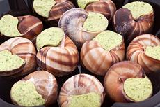 By 1712, with steam powered machinery already being deployed, Western culture was entering the early stages of a massive transformation that has yet to play out, its ultimate conclusion unknown to us. Wealth was starting to make a historic shift, from land owners and agricultural estates to industrialists, bankers, hoteliers and transportation moguls.
By this time the cuisine of France had departed radically from the cuisines of England and Germany. France had imported many concepts, methods and exotic vegetables from Italy. Italy had imported many of them from Greece, and also from southern Spain where Roman influence still lingered. Formal French cuisine was now the very definition of sophisticated dining. Photo © i0142 .
It must be said though, that this famous cuisine was not that of the French people, nor of the provinces. It was an international standard established by talented French chefs for their own purposes. Even today true French cooking is highly regional, and normal households, then and now, have inadequate kitchen staff for the many hours of skimming and simmering needed to make the basic sauces of the "high cuisine".
In the great hotels, wealthy homes and royal courts French chefs were in great demand, from England to Russia. Meals were very elaborate and the courses were becoming strictly formalized. These chefs were, however, increasingly under pressure to cut costs. They abandoned the complex (and expensive) reductions of the past and invented flour thickened sauces and other features of economy.
Food was still served in the same manner, brought out in ordered courses in tureens and on platters to be taken as desired by the diners. Now, however, the dining rooms were much smaller, the diners of a single class, and items could be passed around the table so everyone could sample all dishes. This was the service â la française, the European Service, what we call "Family Style" here in North America.
On the table, though, some things were changing. By the mid 1700s sets of "silver" were provided by hosts as part of the standard table setting and guests no longer brought a little box with their own knife, fork and spoon. Pieces of silverware were often stolen by guests and servants alike - launching the new trade of "pattern matching", which continues to this day. In the mid 1700s the modern curved fork was invented in Germany and by the early 1800s four tines had become standard for dinner forks.
A new etiquette was, of course, developing for display and use of this new tableware, and standards were established for table arrangement.
Then came the French Revolution in 1789
After the Revolution
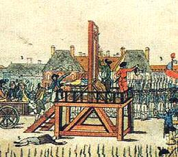
French nobility and royalty alike were shortened by about the length of one head, and the extensive wealth and properties of the Church were confiscated. Having run out of nobility, the revolutionaries then set about beheading each other, whole convents of nuns, and anyone else conveniently at hand. This nonsense ended suddenly with the execution of Robespierre in July 1794. Well, actually it didn't, just the former perpetrators became the targets. Illustration copyright expired.
Cooks who had served nobility, royalty and clergy were now unemployed. Simultaneous with this was the rapid rise to power of the middle class, now anxious to experience luxuries previously available only to the nobility.
The cooks, clever folks that they were, came up with a brand new concept - the restaurant. In the restaurants the middle class could enjoy the kind of dishes the nobility had enjoyed without the expense of employing a full time kitchen staff.
To enable them to serve a hundred different complex and tasty dishes quickly and to order, the cooks devised the world's first fast food system, now called the "French high cuisine". This system was organized and standardized by Marie-Antoine Carême, "King of Chefs and Chef of Kings". Four standard sauces were made in large quantity. As the main ingredient for an order was being cooked, a small amount of the appropriate sauce would be doped with special herbs, spices or other ingredients. When the main ingredient was done, it would be sent out to table with the appropriate sauce and a fancy name.
There was one big problem - the European service. It was very awkward in this restaurant setting. Dishes still took too long to prepare and were difficult to serve on small restaurant tables. Fortunately, some of the best cooks had served in the households of the Russian nobility. The Russian barbarians did things quite differently. They portioned food onto plates at a side board and presented them at table in individual portions. The separate courses were brought out and cleared one by one in this same manner.
The "Russian Service" (Service à la Russe) was an instant hit in the restaurant business and remains so today. It has even largely taken over in the private household, except for some special dinners such as Thanksgiving here in America.
During the 19th century the great hotels developed all over Europe and abroad to serve the travels of the moneyed class. These establishments hired the best chefs that money could buy, and "good hotel food" had a totally different connotation than it does today. These establishments followed the principles laid down by Carême and refined and codified by the great Escoffier in 1906. Little variation was allowed so the dining experience could be as expected no matter what country a traveler visited.
By he end of the 19th century the table setting in better restaurants and hotels had become formalized, and this practice was followed also in wealthy homes. It soon grew rather complex, with special utensils specific to certain dishes. About the only one of these still common in our era is the grapefruit spoon, but oyster forks still make an appearance here and there, and in France special tools for eating snails. Formal service also got out of hand, running to 14 courses.
Modern Times
Our era begins with the end of The Great War (World War I) in 1918. As the American Civil War was the last war of knighthood, valor displaced by industrial production, the Great War was the last war of kings. Not only were the noble houses of medieval times long gone, but the monarchies were now also gone or irrelevant. Even the opulent hotels where the likes of Escoffier had overseen the kitchens were declining, on their way to today's Holiday Inns. Photo by NASA = Public Domain.
The old order was dead - and World War II made very certain it stayed dead - but food habits tend to be extremely conservative. Food service expectations in both home and restaurants continued to follow the post revolution Russian service and the established order of courses. In restaurants this works so well that even Asian restaurants here in North America have partially adopted it. The formal 14 course dinner is, however, pretty much a ghost of the past.
In the home, tradition hasn't been working so well. Unlike restaurants, few private homes have a staff of hard working Guatemalan illegals in the kitchen. This has resulted in sharply increased use of "convenience foods". Researchers have found these industrial concoctions, often of questionable nutritional value and safety, are used not so much to reduce total preparation effort as to enable serving more dishes at meals within the same time span.
Researchers suggest a better plan, particularly in view of the current epidemic of waistline expansion, diabetes and other health problems. This would be to get used to serving fewer items at a meal and pretty much skip most of the traditional courses, and the industrial stuff.
This is a plan I have long followed. Meals I serve consist of one carefully prepared and flavorful main dish (as often as not an Asian dish - this is California, after all) served with rice, potatoes or pasta. It is accompanied only by a salad and wine. The salad may be served before, during or after the main dish, depending, or it may be a simple soup, depending on the main dish. I have yet to hear a complaint about this plan - fewer things but better things is a winner.
One modification I strongly recommend is replacement of the standard American dinner plate, which has become much too large, up to 11-1/4 inches. This causes people to serve too much food, and load the plate with processed foods so it doesn't look empty. I prefer plates about 8-1/4 inches diameter and a little deeper than the standard plate. This size works very well, unless you are serving large slabs of meat.
Another modification I recommend for the modern table is to become highly skilled with chopsticks. Not only can you show off at sushi bars, but these are the very best implements for eating regular dressed green salads. They are also perfect for disassembling fish on the plate and similar tasks requiring delicacy. At home, when serving Asian main dishes with rice, I just use a regular fork, much more efficient. One great thing about Southern California is we are free to adhere fanatically to tradition, or ignore it entirely, depending on the whim of the moment.
Asia
Asian service differs significantly from Western service particularly in that the main dish is always rice, bread or noodles, depending on climatic region. Everything else is a side dish or topping to the main dish, and applied in modest servings. There will be as many of these side dishes, toppings and condiments as time and economic standing allows, and all are served at once. Diners may eat the ones they wish to in any order or amount that pleases them.
In some regions chopsticks and/or spoons are used. Knives are never present at the table. All food is cut into bite-size pieces in the kitchen before being served. Asians were much less tolerant of the concept of armed guests at the table than were the barbarians of the West.
India
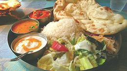 Traditional dining in India is based on a rimmed metal tray called a thali. Each person at the table, which is very low and surrounded by thin cushions, has a thali about 13 to 14 inches in diameter. Just inside the rim will be placed small metal bowls called katori which contain the various side dishes, dals, chutneys and the like. The center is reserved for bread or rice depending on climatic region - bread or rice in the north, rice in the south. Photo by GracinhaMarco Abundo, distributed under license Creative Commons Attribution 2.0 Generic.
Very long grain aromatic Basmati rice, grown in the foothills of the Himalayas, is preferred in the north and through Pakistan. In the southeast, the regional Sona Masoori (a long grained rice), Seeraga Samba (a very tiny grained rice) or another local variety are preferred. In North America, Thai long grain aromatic rice will work fine for dishes from this region. Unlike most Asian countries, in India, particularly in the north, rice is often served as a pilaf or colored and decorated in various ways.
The only utensils are fingers and bread. Spoons are never present, except serving spoons. This accounts for the fact that soups were totally unknown in India until the arrival of Europeans, and are still little seen except in Europeanized environments. Now, in the 21st century, many restaurants in India serve soups, often with ceramic spoons imported from China.
All tableware is of metal as anything made of wood would have been burned for cooking heat, and manufacturing high fired ceramics requires too much fuel. India is more fuel poor than food poor, and that's saying something. Traditional kitchens cook over burning cow pies, and many of the poor today cook over burning plastic scraps - not real good for the environment.
Etiquette for using fingers and bread for conveying food to the mouth is, of course, well defined but varies with region. One rule is absolute. Once food is placed on a persons thali it may not be transferred to any other person, ever, with the sole exception of a mother conveying some to a babe in arms.
For large events, the thali is replaced by banana leaves with food spooned directly onto them, and metal cups are replaced by low fired clay single use cups. These are not washable and are discarded after the event.
Many changes have been adopted from the time of the British Raj to the present. Lunches away from home are called tiffin from British slang. They are often prepared, packed and/or delivered by wives to husbands at work, and to children at school, in a stack of small metal trays also called tiffin.
In Mumbai (formerly Bombay), restaurants are impractical because of the mix of a dozen religions with differing food restrictions and ethnic groups with different preferences. A class of couriers called Tiffin Wallahs has developed a complex system for delivering many thousands of wife prepared tiffin stacks, still fresh and warm, to office bound men every day. This system has proved possible only in Mumbai because of its linear arrangement with a railroad from end to end.
Today, with the disappearance of servants and appearance of women working outside the home, food service is becoming simplified and Europeanized. Adoption of outsourcing work from the West and a Western style economy has made it necessary to adopt the form of food service that evolved with those structures. For informal dining, the thali and katori are often replaced by a stainless steel tray stamped with several compartments, a larger version of the paper and foam party plates used in North America. Today many in India sit down on chairs at a high table and eat a meal with a simplified array of side dishes and condiments - and some even use spoons and (gasp!) even forks.
This evolution can be seen here in Southern California as well. Not many years ago an Indian wife would not dare serve her husband chapatis (flat bread) not freshly made at that instant, for fear of derision, beating or divorce. Today markets serving Indian communities are well stocked with pre-made nan bread, chapatis and other roti. Those who still make them at home often use a tortilla press instead of traditional rolling, and whole wheat tortillas may stand in for harder to find chapatis (which they do very well, by the way).
China
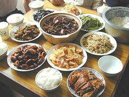 Today's China is a collection of distinct ethnic regions and languages scattered over a vast region. This is why China can not move to an alphabetic script, the symbolic characters represent the same things in many languages that cannot communicate with each other phonetically. The Communist government is trying to make the Han Chinese culture and the Mandarin dialect uniform and dominant over the whole, but is meeting considerable resistance. Photo by Xuzicheng distributed under license Creative Commons Attribution-ShareAlike 2.5 Generic..
Naturally this vast region includes many cuisines, but there are some aspects of uniformity. One is the universal use of chopsticks (basically finger extensions) for conveying food from bowl to mouth, and total rejection of the fork of the barbarians. Spoons are used, but generally they are ceramic, not metal or wood.
Rice or noodles are always the main dishes with all else either side dishes or toppings. Bread is somewhat used in northern China but is not so traditional. Grinding wheat into flour was not possible in China until importation of stone mills from the Roman Empire, and is still considered a bit "foreign".
Rice is always served plain steamed. Dishes with added ingredients, like fried rice, are used as quick lunches or snacks, not as part of a normal sit-down meal. Rice varies regionally in China, with long grain common in the south and medium grain similar to Korean and Japanese in the north. Short grain sticky rice is used for deserts and the like.
As in the rest of Asia, all dishes are presented at table simultaneously - there are no courses. In contrast to India, soups and rice gruels are very popular in China, since they do have spoons there.
Raw vegetables and salads are not served in China for reasons you'd probably rather not know.
Japan
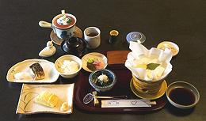 Through most of its history, Japan was "little China", importing its entire culture from the mainland (even though the Japanese and Chinese people aren't that closely related). This changed during the Kamakura Shogunate (1185 to 1333) when Japan was run by Zen Buddhist samurai. In this era, Japanese culture was refined and converted to the forms we know today. Photo by MichaelMaggs distributed under license Creative Commons Attribution-ShareAlike 3.0 Unported..
Rice is generally the main course, with a medium grain rice being standard. This rice sticks together much more than long grain and can be handled more easily with pointy Japanese chopsticks. California grows large amounts of this sort of rice for export to Japan and Korea. Calrose is the best known variety, but I prefer Kokuho Rose. As elsewhere, short grain sticky rice is reserved for deserts and the like.
Table service became simpler and more refined than the Chinese, but is basically similar. As in China and Korea, traditional seating is around a low table with all dishes on the table at the same time.
When Japan's imperial ambitions collided with the United States in the Pacific, the costly (to both sides) defeat and occupation by Americans changed traditional Japan very deeply. Today, older folks complain bitterly that young Japanese have lost the ability to use chopsticks, preferring Western forks, and the elegant cuisine is being replaced by a fast food culture.
This can be seen here in Southern California where the few remaining Japanese markets stock mostly convenience culture items for visitors and recent immigrants. Older immigrants have melded so thoroughly with American culture they no longer maintain a really separate identity. Little Tokyo in Los Angeles is in decline and now owned mainly by Koreans (as are most of the Japanese sushi bars here).
Korea
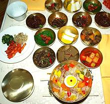 Koreans are no closer related to the Chinese than the Japanese are, but whether the two peoples are any more closely related to each other has been debated inconclusively. Korean tastes and table service are, however, more akin to those of Japan than to those of China. Photo by Shih-Tung Ngiam distributed under license Creative Commons Attribution-ShareAlike 3.0 Unported..
Here in Los Angeles, if you want to prepare authentic Japanese cuisine, the best place to do your shopping is in the Korean markets. They are much better stocked with all the stuff you need than are the few remaining Japanese markets.
Korea does, however, present some serious differences from both its neighbors. Unlike China, where pork and chicken dominate, and Japan where fish dominates, the dominant meat in Korea is beef. Fish does, however, also play a major role in Korea.
Another major difference is the intense use of hot red chilis, not as hot as Thai chilis, but in quantities unthinkable in Japan or northern China. No Korean meal could possibly be complete without kimchi (pickled cabbage, radish, etc.) and by far the most popular kimchis are heavily laced with red chili.
Rice is always the main dish, and it is surrounded by a number of small side dishes (banchan). The number varies with economics, importance of a meal and other factors. At one time how many was decreed in accordance with social rank, with only royalty allowed nine. As in the rest of Asia all dishes are brought to the table at the same time.
Seating is around a low table and each person has their own rice bowl, as in China and Japan, but unlike those countries the bowl is never held in the hand while eating. Spoons are used for soup, and often for rice as well, and chopsticks for everything else. Here the spoons and chopsticks are both made of metal, and often the bowls are too. It is never proper to use both spoon and chopsticks at the same time.
Starting to eat must begin with the oldest person at the table with the youngest person starting last. You should also cover your mouth if using a toothpick, but about the worst offence you can commit is to blow your nose at the table - it just isn't done.
Koreans have not adopted a fast food culture to anywhere near the extent
in Japan, but some such items are used. Many varieties of Korean packaged
raman soups are displayed in any Korean market, and are, incidentally, way
better than the Japanese - and a galaxy beyond those you find in supermarkets
here.
Thailand
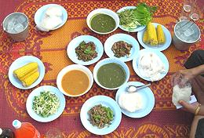 Thai cuisine is considered the high point of all of Southeast Asia. Here the palace cuisine and home cooking have been successfully blended. The main difference is that palace cuisine is presented with a great many decorations made of carved vegetables, herbs and other foods. Some Thai cookbooks have a chapter on creating these decorations, but here in North America all but the very simplest are simply ignored.
Rice is the main dish at every meal, in one form or another. This is long grain aromatic Thai Jasmine rice, except in parts of the northeast where Lao people dominate. Laos is the only country anywhere that uses short grain sticky rice as their main rice.
Very important in Thai cuisine are shrimp paste and the same fish sauces once so essential in the Roman Empire, and chilis - lots and lots of of very hot chilis. All these ingredients are used both in recipes and to make dips and condiments. Thai cuisine was hot even before chilis were brought from South America, by use of large amounts of black pepper and ginger. Some recipes are still done this way.
Strangely enough, though Thailand is the only Southeast Asian country
never to come under European domination, it is the only one that has adopted
the European fork - but they do use it wrong. They us the fork to load the
spoon, the main utensil in Thailand (other than fingers) for carrying food
to the mouth. Chopsticks are used, but only for dishes considered Chinese
in origin. This includes all noodle dishes, whether there is a similar dish
in China or not. Photo by Mattes contributed to the public
domain.
Vietnam
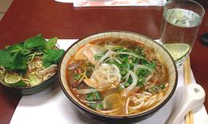 Here Chinese and European influences are much stronger than in Thailand. The main religions are Chinese Buddhism (vs. Indian Buddhism in Thailand), Christianity, and Godless Communism. Chopsticks are as greatly in evidence, as they are in China. Photo by Quocle distributed under license Creative Commons Attribution-ShareAlike 3.0 Unported.
Unlike China, however, raw vegetables and herbs are very much included - Vietnamese cuisine is the most herb infested in the world. Even dill from northern Europe has been adopted enthusiastically.
Influence from the French occupation is much in evidence as well, with many sandwich style foods made up in (slightly modified) French bread. European style sit-down bistros and restaurants are quite evident, especially in the south.
Of course the Vietnamese also have spoons, and soups are very much in evidence everywhere. They are generally served with a plate of herbs and other ingredients to be added as desired. Whether the national soup of Vietnam, Pho, is of French origin or purely a local invention is much debated, but it is served all over Vietnam, from simple versions in the north to more sophisticated versions in the south. With a vast Vietnamese population settled here, it is also served all over Los Angeles and Orange counties in Southern California.
Overall, Vietnamese cuisine is very street food oriented, and even restaurant service shows that influence. A lot of food is served on skewers or in sandwiches. The most Vietnamese way of serving is to roll up various meats, herbs and vegetables in either a lettuce leaf or a sheet of rice paper (or even one inside the other with herbs between) and eat it with a dip. Fish sauce and shrimp paste are as much used as in Thailand, but chilis are used a little less intensely.
The Communists of Vietnam have recently proven to be rather ardent capitalists, but their culinary traditions meld more easily into this new reality than do those of some other regions.
The Philippines
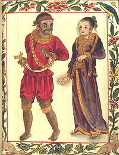 This collection of uncountable islands is the crossroads of the Pacific region. The islands were originally populated by Negritos who may have crossed a land bridge from Indonesia. They were largely pushed aside by Austronesians, themselves driven from Taiwan by invading Chinese. There is still a small remnant population of Negritos - and a small remnant population of Austronesians in Taiwan. Photo copyright expired.
At various times the Philippines have been controlled by China, Spain, the United States, Japan, and the United States again. Today the Philippines are an independent nation.
This role as crossroads was particularly evident during World War II and the Japanese occupation. Naval battles, horribly damaging to both Japan and the United States, were fought in the Philippine seas, and land battles as well. Once the islands were lost to the U.S., Japan was cut off from it's fuel supplies in Southeast Asia, and the handwriting was on the wall.
Of all Asia, the Philippines are the most Europeanized. Most of the population is Catholic or some other form of Christian. There are, however, enclaves of Muslims in the south, who are as violent and murderous as Muslims are anywhere else.
Foods from China, Spain, Mexico (through the Spanish), Japan and North America have all been adopted enthusiastically, and adapted (some may say "horribly distorted") to tastes and conditions of the Islands. Filipino food includes plenty of vinegar and various dried and fermented fish ingredients. Filipino shrimp paste is usually dyed with a strong color which dyes food a garish florescent purplish pink. I find this color rather unappetizing, so I use shrimp paste from somewhere else.
In general, Filipinos (Pinoy) have adopted the European method of serving and European table utensils. Here in Southern California we are becoming very familiar with Philippine cuisine because our entire health care system runs on Filipino immigrants - without them there would be no health care here. Filipino restaurants, however, are few an far between, because eating in the Philippines is very home based, supplemented by street vendors. There isn't a strong restaurant culture to produce chefs to open restaurants here in California.
Indonesia
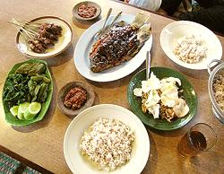 Like the Philippines, Indonesia is a chain of uncountable islands, with culture and cuisine varying considerably from island to island. The country is almost entirely Muslim, except for the famous Hindu island of Bali. As you might expect, pig is not eaten except on Bali where it is very popular. Photo by Gunawan Kartapranata, distributed under license Creative Commons Attribution-ShareAlike 3.0 Unported.
Cuisine has been of little interest to Indonesians. There is no well defined "palace cuisine" as there is everywhere else in Asia, and there have never been famous chefs. Cooking has generally fallen to the lowest person on the family totem pole. With little incentive to do better, food is often poorly prepared from whatever is cheapest. There is no historic record and most Indonesian cookbooks have been written by interested foreigners or Indonesians abroad.
Internationally, Indonesian cuisine is known almost entirely for the rijsttafel (rice table) and nasi goreng (fried rice). As the name implies, the rijsttafel was an invention of the Dutch, very loosely based on Indonesian practice for large celebrations, and fried rice is from China.
Traditionally meals are taken on a raised platform covered with mats. Food is placed on platters and set out in the middle, where there may or may not be a low table.. The only eating utensils may be fingers, though spoons are also used. In some households forks appear, used in the Thai manner to load the spoon with only the spoon traveling to the mouth.
In the villages, food is often set out in the morning and remains there the entire day, then reheated in the evening. There are no set times for gathering to eat. For many, the standard meal is rice with some dried fish and chilis. Rice is preferred a bit sticky to make eating with fingers easier. It is always white rice, steamed or boiled, though for special occasions it may be dyed yellow.
A restaurant service unique to Indonesia is Padang style. A platter of rice is presented to the diner and small bowls containing every dish the restaurant serves are set out behind it. The diner takes those he or she wishes, and pays for only those. The rest go back to the pots in the kitchen. There is no menu and the patron doesn't know the cost until the bill is presented.
For the well-to-do in the cities, Dutch food became the norm, with local and regional food held in very low esteem. With the Dutch cuisine came tables, chairs, spoons and forks. Today American fast food is held in high esteem, with Japanese fast food a close second.
For those unable to afford KFC or Popeye's, street vendors are much in evidence. Most base their reputation on a single dish, sometimes the only dish they serve. Cooking food and supplying it to street vendors is a minor industry among housewives.
Despite this seemingly unpromising environment, writers and persons concerned with preserving the older cultures have scoured the islands and written books recording many recipes very much worthy of our attention.